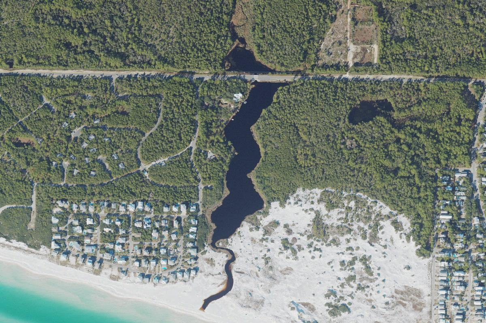

The gateway to Grayton's dune lake country.
Alligator Lake
Lake 10 of 15, west to east · Grayton Beach State Park
Aerial photograph of Alligator Lake in Walton County, Florida, from the U.S. Geological Survey National Agriculture Imagery Program, centered on the USGS geographic-names point for this lake. Photo by U.S. Geological Survey, public domain, via the USGS National Map.
About
Alligator Lake covers about 13 acres inside Grayton Beach State Park. It is a small basin at the edge of a stretch of coast that also holds Little Redfish Lake and, just east, Western Lake.
For many visitors it is the gateway into Grayton’s dune lake country: protected shoreline, park trails, and a short distance from the outfall people come to see. The lake is easy to underestimate because Western Lake, next door, is so much larger. It is still its own basin.
Public access
Alligator Lake is in Grayton Beach State Park. Use park entrances and marked shores. This page does not list a separate county ramp for this lake.
Access rules, park fees, and reservation systems change. This page is a summary for orientation, not a permit or a promise that a shore is open.